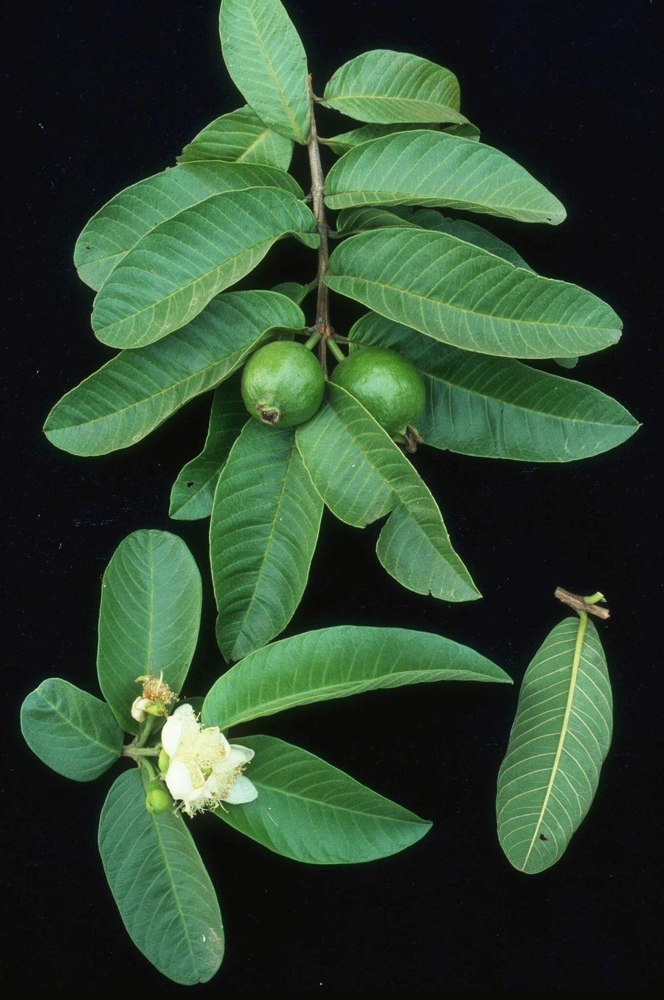

乔木 · 植物界
番石榴 Psidium guajava

桃金娘科常绿小乔木，果实清香多汁、维生素C含量在水果中名列前茅，原产热带美洲，中国华南常见栽培。
- 分类
- 门被子植物门纲木兰纲目桃金娘目科桃金娘科属番石榴属
- 栖息环境
- 海拔 1000 米以下的热带、亚热带向阳坡地、村旁与果园，喜高温湿润
- 地理分布
- 原产热带美洲；中国广东、广西、福建、台湾、海南、云南等地栽培或逸生
- 保护级别
- 暂无评估；中国未列入国家重点保护野生植物名录
物种志
番石榴为桃金娘科番石榴属常绿小乔木，高 3–10 米，树皮灰褐色、光滑，老枝常呈片状剥落。叶片对生，革质，长椭圆形至卵形，背面被柔毛，揉碎后有特殊气味。花单生或 2–3 朵聚生于叶腋，花瓣白色，雄蕊多数；浆果球形或梨形，成熟时淡黄至粉红，果肉白色、粉红或胭脂红，内含多数坚硬种子。
番石榴原产墨西哥至秘鲁一带的热带美洲，17 世纪由西班牙人传入菲律宾，再经海路传入中国华南，如今广东、广西、福建、台湾、海南等地广泛栽培。它喜高温多湿和充足阳光，耐旱、耐瘠薄，对土壤要求不严，在疏松的沙壤土中结果最好。果实清香多汁，可鲜食、榨汁或制果酱、果脯；维生素C含量约为柑橘的数倍。叶片与果皮在民间入药，有收敛止泻之效。
形态与习性
- 株高3–10 m，树皮灰褐色、平滑
- 花期4–5 月，热带地区可全年零星开花
- 果期6–9 月，果肉白、粉红或胭脂红
- 光照喜光，光照充足时结果多、风味浓
- 水分耐旱，忌长期积水
- 土壤适应性广，以疏松沙壤土最佳
- 主要用途鲜食、榨汁、制果酱果脯，叶果入药
趣味知识
- 番石榴的维生素C含量可达柑橘的数倍，在常见水果中位居前列。
- 果实顶端常宿存萼片，外形像石榴，又是外来物种，故名番石榴。
- 中国台湾称其为“芭乐”，闽南语读音由此传播开来。
- 叶片揉碎有特殊气味，民间常用叶煮水辅助止泻。